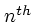

Thanks first to Paul Albrecht, for writing plt and for making it freely available in source form; and to Kim Stevenson and Marvin Appel, who wrote the PLT USERS' GUIDE in 1988, which for many years was the only available documentation for plt, passed as -generation photocopies from user to user. Significant portions of chapters 5, 6, 7, 8, and 12 are based on Kim's and Marvin's guide, and many of the examples here are reconstructed from their work. Thanks also to the reviewers of previous drafts of this book, and especially to Joe Mietus, pltmeister of BIDMC.
I welcome your comments, corrections, and suggestions for improvements; please send them to george@mit.edu.